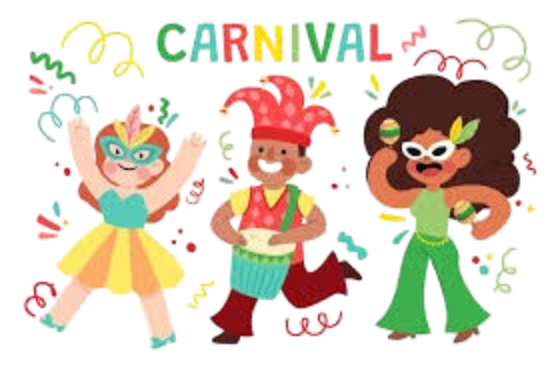

O Carnaval é a maior festa popular brasileira,
celebrada anualmente entre fevereiro e início de março, antecedendo a Quaresma.
A festa mistura tradições pagãs e cristãs, com ritmos como samba, axé e frevo, movimentando a economia local.
Em 2026, a terça-feira de Carnaval será em 17 de fevereiro, sendo ponto facultativo.

Principais Aspectos do Carnaval:
Origem: Originado do latim carnis levale ("retirar a carne"), o Carnaval marca o período de festejos antes do jejum da Quaresma cristã.
No Brasil, evoluiu do "entrudo" português com influências de ritmos africanos.
Festividades: A celebração é marcada por desfiles de blocos de rua, desfiles de escolas de samba (como no Rio e SP),
bailes de máscara e trios elétricos.
Data e Feriado: O Carnaval não é feriado nacional, mas sim ponto facultativo,
geralmente ocorrendo de sábado até a terça-feira, finalizando na Quarta-feira de Cinzas.
A data varia anualmente, ocorrendo 47 dias antes da Páscoa.
Impacto Econômico: É um importante motor econômico, gerando renda para costureiras,
músicos, artesãos e impulsionando a hotelaria e o turismo.
Datas do Carnaval 2026:
Início: Sábado, 14 de fevereiro.
Terça-feira de Carnaval: 17 de fevereiro.
Quarta-feira de Cinzas: 18 de fevereiro.